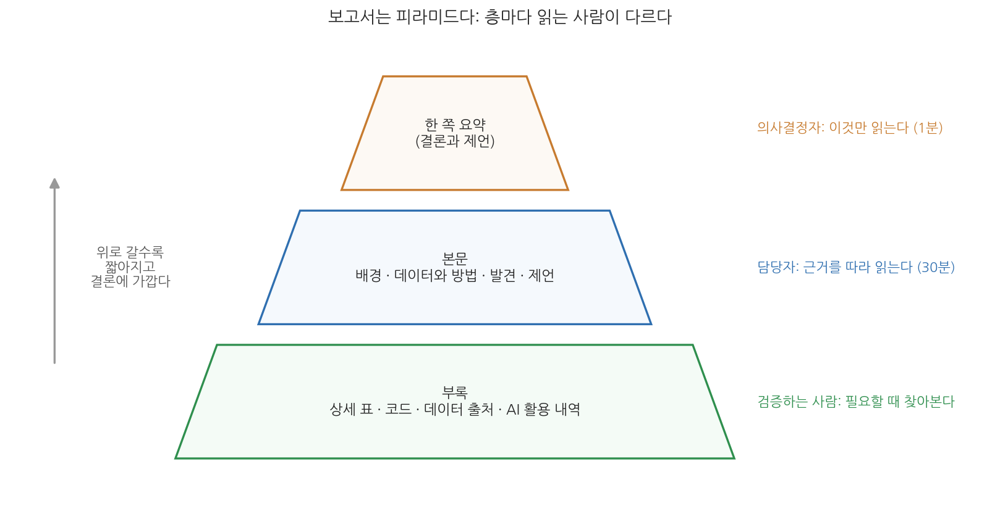
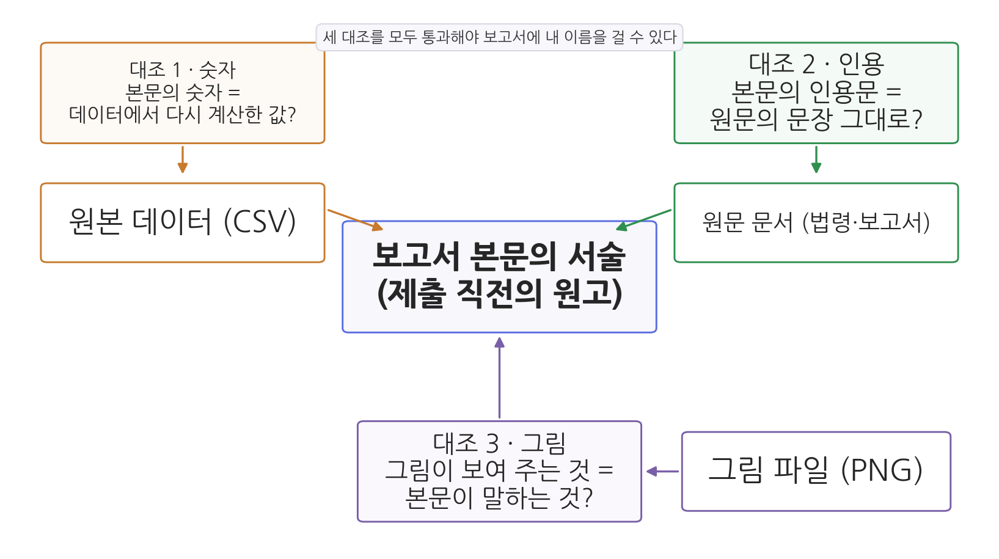

13주차 1회차. 분석 보고서와 책임 있는 AI 활용
숫자는 스스로 말하지 못한다. 우리가 숫자를 대신해 말한다. (네이트 실버, 『신호와 소음』)
이 장에서 배우는 것
1주차의 구청 인턴을 기억하는가. "어린이집이 정말 부족한지 다음 주까지 정리해 달라"는 과장의 말에 막막해하던 그 사람이다. 한 학기가 지난 지금, 그 인턴은 데이터를 찾고(5주차), API로 수집하고(6주차), 정제하고(7주차), 그림으로 탐색하고(8주차), 통계로 진단하는(9주차) 일을 모두 에이전트와 함께 해낼 수 있다. 그런데 마지막 관문이 남아 있다. 과장은 분석 폴더를 열어 보지 않는다. 과장이 읽는 것은 보고서다. 그리고 그 보고서에 적힌 숫자가 틀렸다면, 책임은 에이전트가 아니라 보고서에 이름을 적은 사람이 진다.
이 장은 한 학기의 마지막 이론 장으로, 분석을 "남에게 전달되는 문서"로 완성하는 법과 그 문서에 책임을 지는 법을 다룬다. 1주차에서 배운 AI 플루언시의 네 기둥 중 마지막 기둥인 성실(책임 있고 투명한 사용)을 집중적으로 다루는 장이기도 하다.
구체적으로 다음을 배운다.
- 숫자의 나열을 읽히는 이야기로 바꾸는 법 (데이터 스토리텔링)
- 정책 분석 보고서의 표준 구조와 "한 쪽 요약"이 중요한 이유
- 제출 직전에 하는 AI 산출물의 최종 검증: 숫자·인용·그림의 삼중 대조
- 개인정보, 편향, AI 사용 명시라는 세 가지 윤리 문제
- 과목이 끝난 뒤에도 에이전트와 함께 성장하는 법
이 장은 하나의 질문을 따라 전개된다. "검증을 마친 분석 결과를, 어떻게 남이 믿고 쓸 수 있는 문서로 만드는가?"
1.1 숫자를 이야기로 바꾸는 원리를 배운다 (질문-근거-함의) → 1.2 보고서의 표준 구조를 익힌다 (요약·근거·제언) → 1.3 제출 전 최종 검증 절차를 배운다 (숫자·인용·그림의 삼중 대조) → 1.4 책임 있는 사용의 세 기둥을 본다 (개인정보·편향·투명성) → 1.5 종강 이후의 성장 전략을 세운다.
1.1 데이터 스토리텔링: 숫자에서 이야기로
분석 폴더와 보고서는 다르다
12주차까지의 산출물을 돌아보자. 프로젝트 폴더에는 정제된 데이터, 분석 코드, 그림 파일, 통계 결과가 쌓여 있다. 분석은 사실상 끝났다. 그런데 이 폴더를 통째로 과장에게 보내면 어떻게 될까. 과장은 CSV를 열어 보지 않고, 회귀분석 결과표를 읽을 줄 모르며, 무엇보다 그럴 시간이 없다. 분석 결과가 정책에 반영되려면, 누군가 그것을 읽고 이해하고 설득되어야 한다. 그 다리가 보고서다.
여기서 흔한 착각이 하나 있다. 분석을 열심히 했으니 결과를 빠짐없이 나열하면 좋은 보고서가 된다는 생각이다. 실제로는 반대다. 결과를 빠짐없이 나열한 보고서는 아무 말도 하지 않는 보고서다. 직접 비교해 보자.
나쁜 예와 좋은 예: 같은 분석, 다른 문단
다음 두 문단은 같은 데이터(우리 교재의 sigungu_2023.csv, 전국 229개 시군구)를 같은 방법으로 분석한 결과를 서술한 것이다. 숫자는 모두 실제 계산값이다.
나쁜 예: 표 나열형.
분석 결과 전국 229개 시군구 중 합계출산율 자료가 있는 곳은 228개였다. 합계출산율의 단순 평균은 0.823이었다. 최저는 부산 중구 0.320, 서울 관악구 0.394, 서울 종로구 0.406 순이었다. 최고는 전남 영광군 1.651, 전남 강진군 1.468, 경북 의성군 1.406 순이었다. 수도권 66개 시군구의 평균은 0.690, 비수도권 163개 시군구의 평균은 0.877이었다. 인구밀도와 합계출산율의 상관계수는 -0.599였고, 고령인구비율과 합계출산율의 상관계수는 0.393이었다.
좋은 예: 질문-근거-함의형.
출산율이 낮은 곳은 어디인가. 흔한 짐작과 달리, 인구가 줄어 소멸을 걱정하는 농촌이 아니라 사람이 몰려 있는 대도시다. 2023년 시군구 자료에서 합계출산율 하위 3곳은 부산 중구(0.320), 서울 관악구(0.394), 서울 종로구(0.406)로 모두 대도시 도심이었고, 상위 3곳은 전남 영광군(1.651), 전남 강진군(1.468), 경북 의성군(1.406)으로 모두 농촌 지역이었다. 수도권 평균(0.690)은 비수도권 평균(0.877)보다 뚜렷이 낮았으며, 인구밀도가 높은 곳일수록 출산율이 낮은 경향(상관계수 -0.599)도 확인된다. 이 결과는 저출산 대응의 초점이 "지방 소멸 지역 지원"만으로는 불완전하며, 청년이 밀집한 대도시의 주거·양육 여건이라는 질문을 함께 다뤄야 함을 시사한다. 다만 이는 상관관계이므로, 밀도 자체가 출산율을 낮춘다고 단정할 수는 없다.
두 문단에 담긴 숫자는 같다. 그러나 나쁜 예를 읽은 과장은 "그래서 뭐 어쩌라는 건가"라고 묻게 되고, 좋은 예를 읽은 과장은 다음 회의에서 할 말이 생긴다. 차이는 세 가지 장치에서 나온다.
첫째, 질문으로 시작한다. "출산율이 낮은 곳은 어디인가"라는 질문이 던져지는 순간, 뒤따르는 숫자들은 나열이 아니라 답의 근거가 된다. 둘째, 숫자에 역할을 준다. 나쁜 예에서 여섯 개의 숫자는 모두 같은 비중으로 등장하지만, 좋은 예에서 각 숫자는 "짐작과 다르다"는 주장을 떠받치는 위치에 놓인다. 셋째, 함의로 끝맺되 한계를 함께 적는다. "무엇을 시사하는가"까지 가야 정책 보고서이고, "무엇까지는 말할 수 없는가"를 적어야 정직한 보고서다. 마지막 문장의 단서는 9주차에서 배운 "상관은 인과가 아니다"를 그대로 적용한 것이다.
데이터 스토리텔링(data storytelling)은 분석 결과를 질문, 근거, 함의의 흐름으로 조직해 읽는 사람이 따라올 수 있는 이야기로 전달하는 기술이다. 꾸며 낸 이야기를 덧붙이는 것이 아니라, 검증된 숫자들을 "질문에 답하는 순서"로 배열하는 것이다. 숫자를 고르고 배열하는 판단은 사람이 한다는 점에서, 8주차의 "그리는 것은 에이전트, 읽는 것은 나"와 같은 원리가 글쓰기에도 적용된다.
스토리텔링의 유혹: 이야기가 숫자를 이기면 안 된다
한 가지 경계할 것이 있다. 이야기는 힘이 세다. 그래서 이야기를 먼저 정해 놓고 거기에 맞는 숫자만 골라 쓰고 싶은 유혹이 생긴다. 예를 들어 "대도시 저출산" 이야기를 강조하려고 수도권 안에서도 출산율이 상대적으로 높은 시군구가 있다는 사실을 숨기거나, 8주차 실습에서 만들어 본 왜곡 그래프처럼 축을 조작해 차이를 부풀리면, 그 보고서는 스토리텔링이 아니라 스토리메이킹이 된다. 원칙은 하나다. 이야기는 숫자를 배열하는 방식이지, 숫자를 선별하는 기준이 아니다. 결론에 불리한 숫자일수록 본문에 남겨 두고 해석을 붙이는 것이 신뢰를 얻는 길이다.
1.2 정책 분석 보고서의 구조: 요약, 근거, 제언
보고서는 피라미드다
정책 분석 보고서에는 오랜 시간 검증된 표준 구조가 있다. 정부 부처와 국책연구기관의 보고서를 열어 보면 기관마다 명칭은 조금씩 달라도 뼈대는 거의 같다. 요약, 배경, 데이터와 방법, 발견, 제언, 부록의 순서다.

그림 13-1을 읽는 법은 이렇다. 피라미드의 각 층은 보고서의 부분이고, 오른쪽 글씨는 그 층을 읽는 사람이다. 맨 위의 "한 쪽 요약"은 짧지만 결론과 제언을 모두 담으며, 의사결정자는 대개 이것만 읽는다. 가운데 "본문"은 근거를 순서대로 펼치는 곳으로, 실무 담당자가 따라 읽는다. 맨 아래 "부록"은 가장 두껍지만 아무나 읽지 않는다. 검증하려는 사람이 필요할 때 찾아보는 층이다. 여기서 알 수 있는 것은, 보고서는 처음부터 끝까지 읽히는 문서가 아니라 층마다 다른 독자를 상대하는 문서라는 점이다. 그래서 어느 층에 무엇을 둘지 정하는 일이 곧 보고서 설계다.
한 쪽 요약: 가장 짧지만 가장 중요한 층
이 구조에서 단연 중요한 것이 한 쪽 요약(executive summary)이다. 왜 그런가. 바쁜 의사결정자의 처지에서 생각해 보면 답이 나온다. 하루에 수십 건의 문서를 받는 국장은 보고서를 "읽을지 말지"를 첫 쪽에서 결정한다. 첫 쪽에 결론이 없으면 그 보고서는 결론까지 도달하지 못한 채 서랍으로 들어간다. 한 쪽 요약은 예고편이 아니라, 그것만 읽어도 의사결정이 가능한 독립된 문서여야 한다. 핵심 질문, 데이터와 방법 한 줄, 주요 발견 두세 개, 제언까지 담는다.
한 쪽 요약을 쓰는 일은 분석 전체에 대한 시험이기도 하다. 한 학기 분석을 한 쪽으로 줄이지 못한다면, 대개 분량이 문제가 아니라 핵심 주장이 무엇인지 스스로 정리되지 않았다는 신호다.
목차 예시: 시군구 인구·출산율 분석
표 13-1은 이 표준 구조를 우리 교재의 예시 데이터 분석에 적용한 목차다. 다음 회차(13주차 2회차)에서 각자의 학기 프로젝트 보고서를 쓸 때 출발점으로 삼으면 된다.
표 13-1. 정책 분석 보고서 목차 예시 (시군구 인구·출산율 분석)
| 장 | 내용 | 분량 기준 |
|---|---|---|
| 요약 | 핵심 질문, 주요 발견 3개, 제언. 이것만 읽어도 되게 | 1쪽 |
| 1. 배경 | 왜 이 분석이 필요한가. 저출산·지역 격차라는 정책 맥락과 분석 질문 | 1-2쪽 |
| 2. 데이터와 방법 | 무슨 데이터(출처·시점·범위: KOSIS 시군구 인구·합계출산율, 2023년, 229개 시군구), 어떻게 분석했나(집단 비교, 상관·회귀), AI 활용 내역 | 1-2쪽 |
| 3. 발견 | 질문-근거-함의 문단들. 그림·표는 여기에 배치 | 3-5쪽 |
| 4. 제언 | 발견에서 따라 나오는 정책 제언. 발견과 제언의 연결 고리를 명시 | 1-2쪽 |
| 부록 | 상세 표, 코드와 재현 방법, 데이터 출처 목록, 지시문 기록 | 제한 없음 |
발견만 궁금한 독자에게 데이터 설명은 지루해 보인다. 그런데도 모든 표준 구조가 이 장을 요구하는 이유는, 이 장이 보고서의 검증 가능성을 담보하기 때문이다. 어떤 데이터를 언제 어디서 받았고 무엇을 제외했으며 어떤 방법을 썼는지 적혀 있어야, 다른 사람이 결과를 재현하고 반박할 수 있다. 5주차에서 배운 메타데이터와 코드북이 데이터의 신분증이라면, 이 장은 분석의 신분증이다. 12주차의 재현성 테스트를 통과한 분석이라면 이 장은 이미 절반 이상 쓰여 있는 셈이다.
1.3 AI 산출물의 최종 검증: 숫자·인용·그림의 삼중 대조
왜 제출 직전에 다시 검증하는가
이 교재는 매주 검증을 반복해 왔다. 수집 건수를 대조했고(6주차), 정제 결과를 표본 대조했고(7주차), 통계 해석의 과잉을 잡아냈다(9주차). 그런데 왜 제출 직전에 또 검증하는가. 이유는 보고서 작성 단계에서 새로운 오류가 태어나기 때문이다.
보고서 초안을 에이전트와 쓰다 보면, 분석 단계에서는 없던 오류가 스며든다. 에이전트가 요약문을 다듬으면서 0.690을 0.69로 반올림하다가 0.609로 잘못 옮기기도 하고, 초안을 여러 번 고치는 사이 본문에는 옛 분석의 숫자가 남고 그림만 새 분석으로 바뀌기도 한다. 2주차에서 배웠듯 LLM은 그럴듯한 문장을 만드는 기계이므로, 문장을 다듬는 과정에서 숫자까지 그럴듯하게 바꿔 버리는 일이 실제로 일어난다. 분석이 다 맞아도 보고서가 틀릴 수 있다는 것, 이것이 최종 검증이 별도로 필요한 이유다.
세 가지 대조
최종 검증의 뼈대는 삼중 대조다. 보고서 본문의 서술을 세 방향에서 원본과 맞춰 본다.

그림 13-2를 읽는 법은 이렇다. 가운데 상자가 제출 직전의 보고서 원고이고, 세 방향의 대조가 각각 다른 원본을 기준으로 삼는다. 여기서 중요한 것은 세 대조의 기준이 서로 다른 파일이라는 점이다. 하나라도 생략하면 그 방향의 오류는 걸러지지 않는다.
대조 1: 숫자 = 데이터에서 다시 계산한 값. 본문에 등장하는 모든 수치(평균, 개수, 비율, 상관계수)를 원본 데이터에서 다시 계산해 맞춰 본다. 기준은 보고서의 다른 곳도, 에이전트의 기억도 아닌 데이터 파일 그 자체다. 실무 요령은 본문에서 숫자만 뽑아 목록을 만든 뒤 하나씩 재계산 결과와 대조하는 것인데, 이 작업 자체를 에이전트에게 시킬 수 있다. 구체적 절차는 다음 회차에서 실습한다.
대조 2: 인용 = 원문의 문장. 보고서가 법령, 상위 계획, 다른 기관의 보고서를 인용했다면 그 문장을 원문에서 찾아 대조한다. 11주차에서 배웠듯 그라운딩 없이 생성된 인용문은 환각의 단골 무대다. 존재하지 않는 조항 번호, 실제와 미묘하게 다른 문구, 있는 문서의 없는 내용이 모두 여기서 걸러진다. 원문을 열어 해당 문장에 눈으로 밑줄을 긋는 것까지가 대조다.
대조 3: 그림 = 본문의 서술. 그림이 보여 주는 것과 본문이 말하는 것이 일치하는지 본다. 본문은 "수도권이 낮다"고 쓰여 있는데 그림의 막대는 다른 변수를 그리고 있지 않은가. 본문이 말하는 3곳이 그림에서도 하위 3곳인가. 그림 번호와 캡션은 본문의 참조와 맞는가. 여러 번 고쳐 쓴 원고일수록 본문과 그림의 짝이 어긋나 있을 확률이 높다.
삼중 대조의 작업량이 크므로 에이전트에게 대조표 작성을 맡기는 것은 좋은 전략이다. 그러나 에이전트가 만든 대조표를 읽지 않고 "검증 완료"라고 믿는 것은 검증을 한 것이 아니라 검증을 위임한 것이다. 2주차의 원칙을 떠올리자. 검증 가능한 단위로 일을 맡기되, 최종 확인은 사람이 한다. 최소한 핵심 숫자 몇 개는 반드시 자기 손으로 재계산해 본다. 보고서에 이름이 올라가는 사람은 에이전트가 아니라 여러분이다.
1.4 윤리: 개인정보, 편향, AI 사용 명시(투명성)
검증이 "내용이 맞는가"의 문제라면, 윤리는 "이 분석을 이런 방식으로 해도 되는가"의 문제다. 공공데이터 분석에서 특히 세 가지가 중요하다.
개인정보: 공공데이터라고 다 안전하지 않다
우리가 다뤄 온 시군구 인구나 합계출산율은 집계 데이터다. 개인이 아니라 지역 단위로 합산된 숫자이므로 그 자체로는 특정인을 식별할 수 없다. 그러나 공공데이터가 늘 그런 것은 아니다. 두 가지 함정이 있다.
첫째, 작은 집단의 함정이다. 집계 데이터라도 칸이 잘게 쪼개지면 개인이 드러난다. "A면의 30대 외국인 여성 인구: 1명" 같은 칸이 있는 표에, 다른 표에서 얻은 정보를 결합하면 그 한 사람의 특성이 추적될 수 있다. 국가데이터처(옛 통계청)를 비롯한 통계 기관들이 소규모 칸을 비공개 처리하거나 반올림하는 이유가 이것이다. 둘째, 결합의 함정이다. 각각은 익명인 데이터도 여러 개를 이어 붙이면 개인이 재식별(re-identification)될 수 있다. 분석 과정에서 데이터를 병합(7주차)할수록 이 위험은 커진다.
학생의 실천 원칙은 단순하다. 개인 단위 데이터는 이용허락 범위(5주차)를 반드시 확인하고, 보고서에는 집계 수준의 결과만 싣고, "표에서 특정 개인이 드러나는 칸이 없는가"를 제출 전에 확인한다. 그리고 에이전트에게 데이터를 다루게 할 때, 개인정보가 든 파일을 웹 검색이나 외부 서비스로 보내는 작업을 승인하지 않는다.
편향: 데이터의 편향과 모델의 편향
편향(bias)은 두 경로로 분석에 스며든다.
데이터의 편향. 데이터는 세상의 중립적 기록이 아니라, 특정한 수집 절차의 산물이다. 10주차에 다룬 민원 데이터를 생각해 보자. 민원 데이터는 "주민의 불편"이 아니라 "민원을 제기한 주민의 불편"을 기록한다. 민원 제도를 잘 아는 사람, 시간이 있는 사람의 목소리가 과대 대표되고, 제도를 모르거나 접근이 어려운 사람의 불편은 데이터에 아예 없다. 이런 데이터로 "불편이 없는 지역"을 판정하면, 목소리를 내지 못한 사람들이 정책에서도 지워진다. 데이터에 없는 사람은 누구인가라는 질문을 보고서의 한계 서술에 포함하는 것이 최소한의 대응이다.
모델의 편향. 2주차에서 배웠듯 LLM은 학습데이터의 통계적 무늬를 재생산한다. 학습데이터에 스며 있는 고정관념(특정 지역·성별·직업에 대한)이 에이전트의 해석문에도 묻어날 수 있다. 예컨대 고령화율이 높은 지역의 분석에서 에이전트가 근거 없이 "활력을 잃은", "쇠락한" 같은 수식어를 붙인다면, 그것은 데이터가 아니라 모델의 무늬에서 온 것이다. 숫자는 받아들이되 수식어는 의심하는 습관이 필요하다.
AI 사용 명시: 투명성이라는 마지막 기둥
이제 1주차에서 예고했던 성실의 핵심 실천, AI 사용 명시(AI disclosure)에 도착했다. 에이전트와 함께 만든 보고서에는 그 사실을 밝혀야 하는가. 밝힌다면 어떻게 적는가.
밝혀야 한다는 쪽으로 국내외 관행이 빠르게 수렴하고 있다. 국제 학술 출판계(국제의학학술지편집인위원회, 주요 출판사들)는 AI 보조 도구 사용을 원고에 명시하도록 요구하고, AI를 저자로 올리는 것은 금지한다. 책임은 사람만 질 수 있기 때문이다. 미국심리학회(APA)도 원고 작성에 생성형 AI를 사용한 경우 방법 부분에 공개하도록 한다. 한국연구재단의 연구개발 보고서 지침도 AI 도구로 생성한 문장·자료를 사용한 경우 도구명, 버전, 활용 방법 등을 표기하도록 안내한다. 대학들의 수업 가이드라인도 대체로 같은 방향이다. 공통 원칙을 추리면 세 가지다. 어떤 도구를(도구명·버전), 어떤 범위에서(무엇에 사용했는지), 어떻게 책임지는지(검증 절차와 최종 책임) 밝히는 것이다.
이 원칙을 우리 과목의 보고서에 적용한 예시 문구가 아래다. 다음 회차의 종합 프로젝트에서 이 형식을 그대로 쓴다.
"이 보고서는 AI 에이전트(Claude Code, VSCode 확장, 2026년 6월 기준 버전)를 활용하여 작성되었다. 활용 범위는 다음과 같다. (1) 데이터 수집·정제·분석 코드의 작성과 실행, (2) 그림 생성, (3) 본문 초안 작성 보조. 분석 질문의 설정, 방법의 선택, 결과의 해석과 정책 제언은 작성자가 직접 수행하였다. 본문의 모든 수치는 원본 데이터에서 재계산하여 대조하였고, 인용문은 원문과 대조하였으며, 주요 지시문 기록은 부록에 첨부하였다. 보고서 내용에 대한 최종 책임은 작성자에게 있다."
도구·범위·검증·책임의 네 요소가 모두 들어 있는지 확인하면 된다. 수업 과제라면 담당 교수의 지침이, 실무라면 소속 기관의 지침이 우선한다.
AI 사용 명시를 감점의 자백처럼 느끼는 학생이 많다. 반대로 생각해야 한다. 검증 절차까지 함께 적힌 명시문은 "이 보고서는 어디까지 믿을 수 있고 어떻게 확인할 수 있는지"를 알려 주는 품질 표시다. 숨긴 사용이 드러났을 때 무너지는 것은 그 보고서 하나가 아니라 작성자의 이후 모든 보고서에 대한 신뢰다.
1.5 과목이 끝난 뒤: 에이전트와 함께 성장하기
도구는 바뀌고 원칙은 남는다
이 교재가 다룬 도구들은 빠르게 변한다. 여러분이 졸업할 무렵의 Claude Code는 지금과 화면도 기능도 다를 것이고, 이름이 다른 도구가 표준이 되어 있을 수도 있다. 그러면 한 학기 배운 것이 소용없어지는가. 그렇지 않다. 이 교재에서 도구 사용법은 절반이고, 나머지 절반은 도구가 바뀌어도 남는 원칙이었다.
- 지시·검증·해석의 순환(1주차)은 어떤 에이전트를 쓰든 사람의 일이다.
- 확률로 말을 만드는 기계는 그럴듯한 거짓을 말할 수 있다(2주차)는 성질은 모델이 좋아져도 정도만 달라질 뿐 사라지지 않는다.
- 역할·맥락·과제·제약·산출물을 갖춘 지시(3주차), 재현 가능한 환경(4주차), 출처 있는 데이터(5-6주차), 근거를 남기는 정제(7주차), 그림과 통계를 읽는 눈(8-9주차), 문서에 근거해 답하게 하는 그라운딩(11주차), 사람이 확인하는 지점을 설계한 파이프라인(12주차), 그리고 이 장의 삼중 대조와 투명성까지. 전부 특정 제품의 기능이 아니라 일하는 방식이다.
새 도구를 만나면 이렇게 접근하면 된다. 2주차에 했던 것처럼 일부러 틀리게 만들어 보며 성질을 파악하고, 3주차에 만든 지시문 라이브러리를 새 도구에 맞게 고쳐 보고, 검증 절차는 그대로 유지한다.
자산을 챙겨서 나가라
이 과목에서 여러분이 만든 것 중 성적표보다 오래 쓸 자산이 세 가지 있다. 첫째, 지시문 라이브러리(3주차)다. 잘 작동했던 지시문들은 다음 과제와 직장에서 그대로 재활용된다. 둘째, CLAUDE.md와 Skill(3·11주차)이다. 반복 규칙과 반복 작업을 파일로 만들어 두는 습관은 어떤 에이전트 도구에서든 통용되는 사고방식이다. 셋째, 다음 회차에 완성할 재현 패키지다. 이것은 "데이터 분석을 할 줄 안다"는 말을 증명하는 실물 포트폴리오가 된다.
마지막으로, 성장의 방향에 대해 한마디 남긴다. 에이전트가 발전할수록 코드를 짜는 능력의 값은 내려가고, 좋은 질문을 만드는 능력과 결과를 의심하는 능력의 값은 올라간다. 전자는 에이전트가 대신해 주지만 후자는 대신해 주지 못하기 때문이다. 행정학 공부는 그 후자를 기르는 공부다. 제도를 알고, 현장을 알고, 숫자 뒤의 사람을 상상하는 힘이 여러분의 비교우위였고, 앞으로 더 그럴 것이다.
요약
분석 폴더는 보고서가 아니다. 분석 결과가 정책에 닿으려면 검증된 숫자를 질문-근거-함의의 흐름으로 배열하는 데이터 스토리텔링이 필요하며, 이때 이야기는 숫자를 배열하는 방식이지 선별하는 기준이 아니다. 정책 분석 보고서는 요약, 배경, 데이터와 방법, 발견, 제언, 부록의 표준 구조를 따르는 피라미드형 문서로, 층마다 독자가 다르며 의사결정자가 실제로 읽는 것은 한 쪽 요약이다. 보고서 작성 단계에서는 분석 단계에 없던 오류가 새로 생기므로, 제출 직전에 본문의 숫자를 데이터 재계산값과, 인용을 원문과, 그림을 본문 서술과 맞춰 보는 삼중 대조를 거친다. 윤리 면에서는 집계 데이터의 재식별 위험(개인정보), 데이터에 기록되지 않은 사람과 모델이 재생산하는 고정관념(편향)을 살피고, 도구·범위·검증·책임을 담은 AI 사용 명시로 투명성을 지킨다. 도구는 바뀌어도 지시·검증·해석의 원칙은 남으며, 지시문 라이브러리와 재현 패키지가 과목이 끝난 뒤에도 남는 자산이다.
연습문제
13-1. 문단 고쳐 쓰기. 다음은 표 나열형 문단이다. 1.1절의 좋은 예를 참고하여 질문-근거-함의형 문단으로 고쳐 써 보라. 어떤 숫자를 앞세우고 어떤 숫자를 뒤로 보낼지, 마지막에 어떤 한계 단서를 붙일지 정해야 한다.
우리 시 5개 구의 도서관 수는 A구 12개, B구 3개, C구 9개, D구 8개, E구 10개이다. 인구 10만 명당 도서관 수는 A구 2.1개, B구 0.8개, C구 2.3개, D구 2.0개, E구 2.2개이다. 시 평균은 1.9개이다.
13-2. 삼중 대조 설계. 에이전트가 쓴 보고서 초안에 다음 세 문장이 있다. 각 문장을 검증하려면 삼중 대조 중 어느 대조를 어떤 원본에 대해 수행해야 하는지 각각 쓰라. (a) "수도권 시군구의 평균 합계출산율은 0.69로 비수도권보다 낮았다." (b) "공공데이터법 제3조는 '공공기관이 보유·관리하는 데이터의 개방을 원칙으로 한다'고 규정한다." (c) "그림 4에서 보듯 고령인구비율이 높은 지역일수록 출산율이 높은 경향이 있다."
13-3. 명시문 작성. 여러분이 이번 학기 실습에서 실제로 한 작업을 떠올리며, 1.4절의 네 요소(도구, 범위, 검증, 책임)를 갖춘 자신의 AI 활용 내역 문구를 5문장 이내로 작성해 보라. 그리고 짝과 바꿔 읽으며 네 요소가 모두 들어 있는지 서로 확인하라.